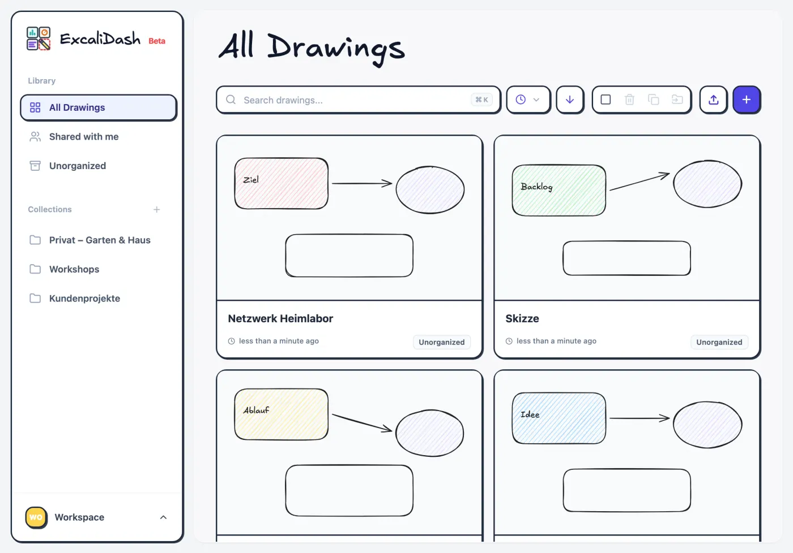
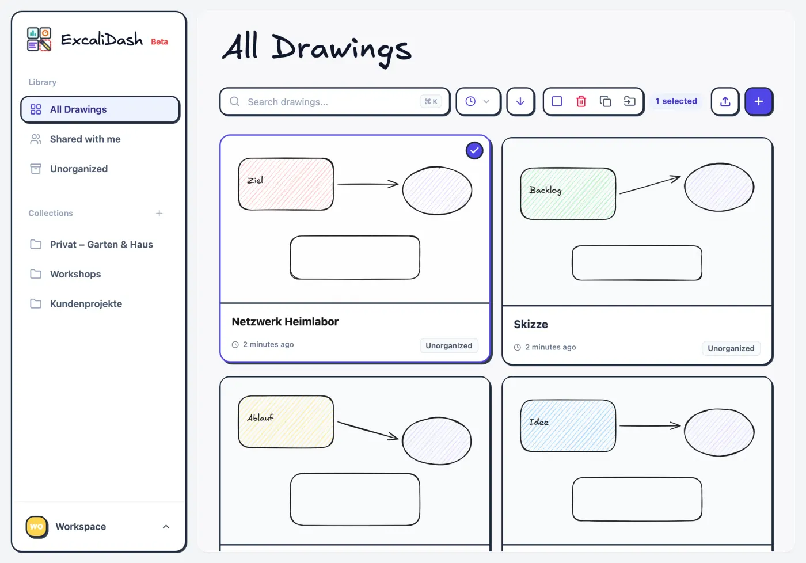
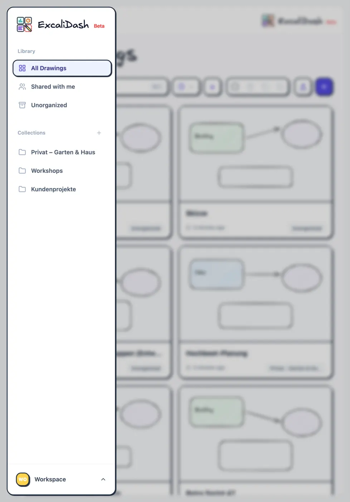
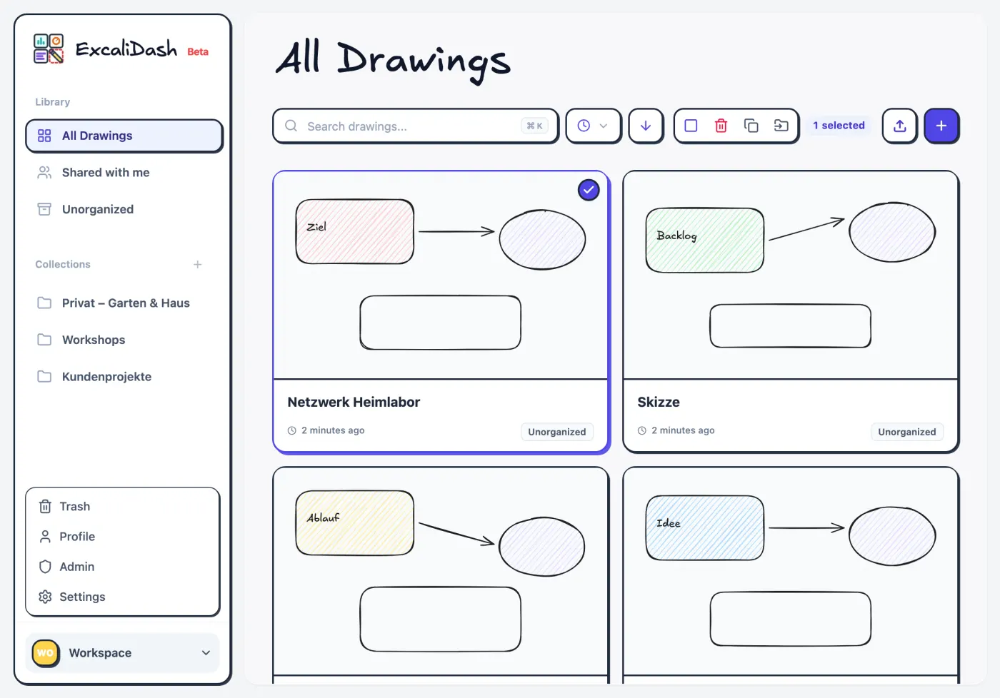
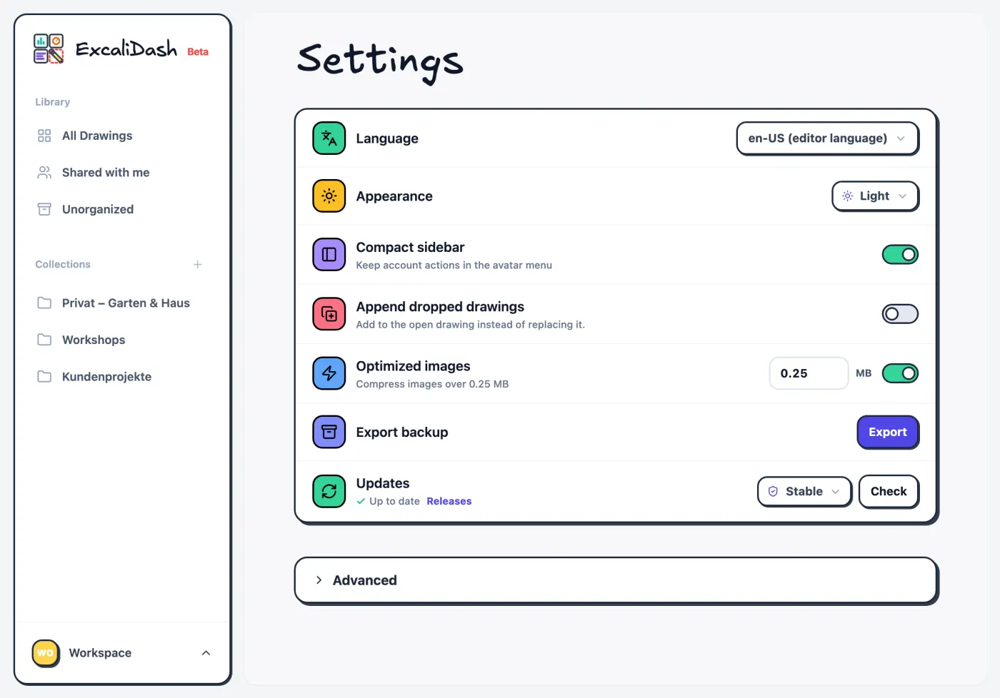
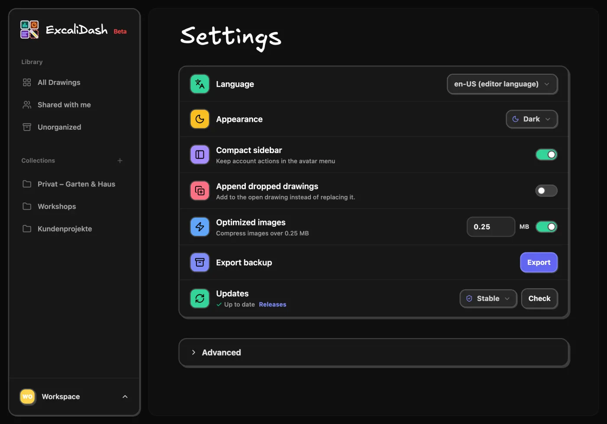
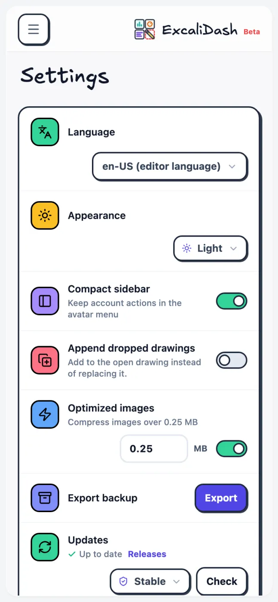
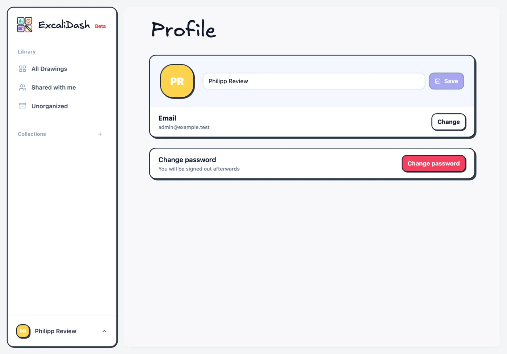
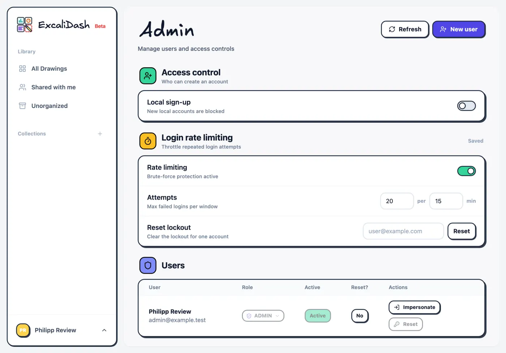
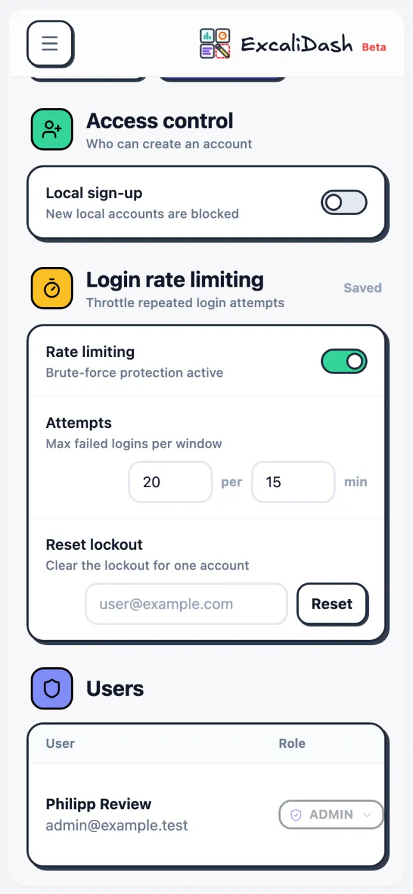

Impeccable-Review (Modus Operate, Verfeinerung im bestehenden Stil, kein Redesign) für Dashboard, Collections, Settings, Profile, Admin und die Auth-Seiten. Schwerpunkt iPad mit Touch, dazu Desktop und Phone. Alle Screenshots stammen aus dieser Session (headless Chromium mit Touch-Emulation), alle Belege zeigen auf datei:zeile im Stand 509e43b.
Stand 25.11.2026 · Editor (/editor/:id, /shared/:id) bewusst ausgenommen, läuft parallel · Mocks in App-Optik (slate/indigo, 2-px-Rahmen, harte 1,5-px-Schatten wie in index.css:49–92)
Ranking und Empfehlung
Die ersten sieben bilden zusammen einen Touch- und Bugfix-Pass (≈ 1–2 Tage): Sie machen Funktionen auf dem iPad überhaupt erst erreichbar oder beheben belegte Fehler. Empfehlung: diese sieben umsetzen, 8–15 danach als zweite Runde, den Rest nur bei Gelegenheit.
Kein Vorschlag widerspricht einem Eintrag in DECISIONS.md (beide Einträge betreffen Editor-Chrome und Freigabe-Links).
D5 berührt die gerade umgebaute Dashboard-Toolbar (1111d7c, 3783af7). Die dort entschiedene Ein-Zeilen-Toolbar mit Icon-Buttons von md bis 2xl bleibt unangetastet; D5 betrifft nur Breiten unter md, die der Umbau nicht adressiert hat.
D7 ergänzt 3aedd5e: Dort wurde nur .ui-toolbar-button unter (hover: none) auf 44 px gehoben (index.css:104–108), .ui-button-group-item blieb bei 34 px.
S2 ändert das Verhalten der Upstream-Einstellung „Compact sidebar“ (SidebarFooter.tsx:51, Upstream-Commit 08a84bc). Keine eigene Entscheidung, aber ein Abweichen vom Upstream-Fork.
Dashboard / und /collections
/collections?id=… rendert dieselbe Komponente (App.tsx, Route /collections → Dashboard); alle Punkte gelten dort genauso. Gemessen: Auf dem iPad quer sind nur 2 Karten vollständig sichtbar, auf dem Phone beginnt die erste Karte erst bei y = 369 px von 844.

iPad 11″ quer (1194×834): 2 Spalten, 2 Karten ganz sichtbar
Umbenennen, Verschieben, Duplizieren, Export und Löschen einer einzelnen Zeichnung hängen nur an onContextMenu (DrawingCard.tsx:153, Menü in DrawingCardContextMenu.tsx:84–216) und Umbenennen zusätzlich an onDoubleClick (DrawingCard.tsx:266). Einen Touch-Einstieg gibt es im Code nicht: Außerhalb des Editors findet grep keine Long-Press- oder Touch-Handler, der einzige onPointerDown (DrawingCard.tsx:248) stoppt nur die Propagation. Das Untermenü „Move to…“ öffnet nur per onMouseEnter (DrawingCardContextMenu.tsx:109), der Button selbst hat kein onClick (:112).
Vorschlag
Rechts im Kartenfuß einen ⋯-Button (44 × 44 px Trefferfläche, optisch 32 px) ergänzen, der dasselbe DrawingCardContextMenu öffnet, verankert am Button statt an Mauskoordinaten. „Verschieben nach…“ öffnet die Collection-Liste per Tap im selben Menü (aufklappen statt Hover-Untermenü). Rechtsklick und Doppelklick bleiben für Desktop.
Impact
Hoch. Auf dem iPad sind fünf Kernaktionen sonst nicht auffindbar. Ob iPadOS-Safari bei Long-Press ein contextmenu-Event schickt, ist auf echtem Gerät nicht verifiziert; selbst wenn, ist die Geste unsichtbar.
nachher Karte mit ⋯ und geöffnetem Menü (Touch)
Netzwerk Heimlabor
vor 2 Min.Unorganized
Umbenennen
Verschieben nach
Kundenprojekte
Workshops
Duplizieren
Exportieren
Löschen
vorher Rechtsklick-Menü am Desktop, kein Einstieg per Touch
Auswahl-Kreis auf Touch sichtbar, 44 px Trefferfläche
Impact hochAufwand S
Problem
Der Auswahl-Kreis ist bis zum Hover unsichtbar: opacity-0 group-hover:opacity-100 (DrawingCard.tsx:182), gemessen opacity: 0 auf allen Größen. Er ist 24 × 24 px (DrawingCard.tsx:194). Auf dem iPad gibt es kein Hover; der Kreis lässt sich nur durch Tippen auf eine unsichtbare Stelle treffen (im Test: Tap traf, „1 selected“ erschien). Mehrfachauswahl per Ziehen arbeitet nur mit mousedown/mousemove (useDashboardSelection.ts:77–80), Shift/⌘ fehlen auf Touch.
Vorschlag
Unter @media (hover: none) den Kreis immer zeigen (halbtransparent, wenn nicht ausgewählt) und die Trefferfläche per Padding auf 44 × 44 px vergrößern, optisch 28 px. Sobald etwas ausgewählt ist, wechselt Tippen auf Karten bereits in Auswahl (useDashboardSelection.ts:172–179), das bleibt.
Impact
Hoch: Bulk-Aktionen (Verschieben, Duplizieren, Papierkorb) sind auf dem iPad praktisch unauffindbar.
nachher Touch: Kreis immer sichtbar, Trefferfläche gestrichelt
Skizze
Netzwerk Heimlabor
44 × 44 px Treffer, 28 px Kreis; nur unter (hover: none), Desktop bleibt wie heute.
vorher iPad quer nach Tap auf die unsichtbare Stelle

D3
Dichteres Raster: 3 Spalten auf dem iPad
Impact hochAufwand S
Problem
gridTemplateColumns: repeat(auto-fill, minmax(280px, 1fr)) (DashboardPanels.tsx:165) plus lg:p-8 im Inhaltsbereich (Layout.tsx:222) ergibt gemessen: iPad quer 2 Spalten à 402 px, 2 Karten vollständig sichtbar; iPad hoch 2 Spalten à 368 px; Desktop 1440 3 Spalten; Phone 1. Auf dem iPad sieht man pro Bildschirm weniger Zeichnungen als auf einem Phone im Querformat.
Vorschlag
Ab mdminmax(220px, 1fr) und Seitenpadding md:p-6. Rechnung mit den gemessenen Breiten: iPad quer 886 − 48 = 838 px → 3 Spalten à ≈ 268 px; iPad hoch 802 − 48 = 754 px → 3 Spalten à ≈ 240 px; Desktop 1132 − 48 = 1084 px → 4 Spalten. Phone bleibt bei 1 Spalte (minmax 280 unter md). Vorschau-SVGs skalieren bereits (DrawingCard.tsx:226–228).
Impact
Hoch für die Übersicht: 50 % mehr Zeichnungen pro Blick auf dem iPad, ohne neues Layout.
Das Menü wird ungeklemmt an der Mausposition platziert: style={{ top: position.y, left: position.x }} (DrawingCardContextMenu.tsx:95), das Untermenü immer rechts (left-full, :127). Gemessen bei Rechtsklick auf die rechte Karte (Desktop 1440 px): Menü endet bei x = 1562, Untermenü bei x = 1755, beides abgeschnitten (Screenshot oben bei D1). Dasselbe Muster in SidebarContextMenu.tsx:41.
Vorschlag
Nach dem Rendern die Größe messen und in den Viewport klemmen (links/oben verschieben); Untermenü nach links öffnen, wenn rechts kein Platz ist. Mit D1 entfällt das Untermenü auf Touch ohnehin.
Impact
Mittel: Belegter Bug, auf jeder Bildschirmgröße bei Karten am rechten Rand.
nachher Menü öffnet links vom Zeiger, Untermenü nach links
Viewport-Rand
Rename
Move to…
Duplicate
Delete
Unorganized
Workshops
Kundenprojekte
D5
Phone-Toolbar von 4 auf 2 Zeilen
Impact mittelAufwand M
Problem
Unter sm stapelt die Toolbar Suche, Sortierung, Auswahlgruppe und Import/New in vier Zeilen (DashboardToolbar.tsx:91–306, flex-col, w-full-Gruppen). Zusammen mit 64 px Kopfzeile (Layout.tsx:127) und Seitentitel beginnt die erste Karte bei y = 369 von 844 px (gemessen). Die Auswahlgruppe steht dauerhaft mit drei deaktivierten Icons da.
Vorschlag
Nur unter md: Zeile 1 Suche; Zeile 2 Sortierung (flex-1), Richtung, Import als Icon, „+ Neu“ als primärer Icon-Button. Die Auswahlgruppe erscheint erst bei hasSelection als eigene Zeile mit Zähler. Der Seitentitel darf auf dem Phone kleiner werden (text-3xl → text-2xl, Dashboard.tsx:249).
Impact
Mittel: erste Karte rückt um ≈ 110 px nach oben, primäre Aktion bleibt im Daumenbereich der Toolbar.
nachher Phone 390 px, nichts ausgewählt
Date Modified
Bei Auswahl schiebt sich eine Zeile „3 ausgewählt · Papierkorb · Duplizieren · Verschieben · ✕“ darunter.
vorher Phone 390 px
D6
Collection-Chip auf der Karte ist ein 23-px-Ziel
Impact niedrigAufwand S
Problem
Der Chip „Unorganized“ öffnet ein Verschieben-Menü, ist aber gemessen 87 × 23 px (py-0.5 text-[11px], CollectionPicker.tsx:51) und sieht aus wie ein Label.
Vorschlag
Mit D1 als reine Anzeige behandeln oder unter (hover: none) die Trefferfläche per Pseudo-Element auf 44 px Höhe erweitern. Verschieben läuft dann über das ⋯-Menü.
D7
Button-Gruppe 34 px und „⌘K“ auf reinen Touch-Geräten
Impact niedrigAufwand S
Problem
.ui-button-group-item ist 34 × 34 px (index.css:91, gemessen), die Touch-Regel in index.css:104–108 erfasst nur .ui-toolbar-button. Der Hinweis ⌘K erscheint ab sm auch auf dem iPad ohne Tastatur (DashboardToolbar.tsx:120).
Vorschlag
In denselben @media (hover: none)-Block .ui-button-group-item { h-10 w-10 } aufnehmen (Gruppe dann 44 px hoch, passt zur 42-px-Zeile) und den kbd dort ausblenden.
Sidebar und Layout gilt für alle Seiten mit Layout
Unter 1024 px wird die Sidebar zum Drawer (Layout.tsx:106): iPad hoch hat Drawer, iPad quer die feste Sidebar.

iPad hoch: Drawer geöffnet

iPad quer: Trash, Profile, Admin, Settings stecken im Account-Menü
S1
Collections auf Touch verwalten
Impact hochAufwand M
Problem
Teilen, Umbenennen und Löschen einer Collection gibt es nur per Rechtsklick (Sidebar.tsx:219 → SidebarContextMenu.tsx:44–77), Umbenennen zusätzlich per Doppelklick (Sidebar.tsx:215). Der „+“-Button für eine neue Collection ist 28 × 28 px mit opacity-70 (Sidebar.tsx:163, gemessen 28 px).
Vorschlag
In SidebarItem einen trailing ⋯-Button (44 px Treffer), auf Touch immer sichtbar, auf Desktop bei Hover/Fokus. Er öffnet das vorhandene Menü, am Button verankert. „+“ auf 44 px unter (hover: none), volle Deckkraft.
Impact
Hoch: Auf dem iPad lassen sich Collections heute anlegen, aber nicht umbenennen, teilen oder löschen.
nachher Sidebar-Abschnitt Collections (Touch)
Collections
Privat – Garten & Haus
WorkshopsShared
Kundenprojekte
Zeilen 44 px (heute 40 px), ⋯ und + mit 44 px Treffer.
S2
Trash in die Library, aktive Seite sichtbar
Impact mittelAufwand S
Problem
Mit „Compact sidebar“ (Standard true, SidebarFooter.tsx:51) liegt Trash im zugeklappten Account-Menü (SidebarFooter.tsx:104–136); als Drop-Ziel taucht es nur auf, weil das Menü bei dragenter aufgeht (:90), was auf Touch nicht greift. Auf Settings/Profile/Admin ist in der Sidebar nichts aktiv markiert: Die Seiten setzen selectedCollectionId="SETTINGS" usw. (Settings.tsx:362), der zugehörige Eintrag steckt aber im geschlossenen Menü.
Vorschlag
Trash als vierte Zeile unter „Unorganized“ in der Library (dauerhaft sichtbares Drop-Ziel). Auf Settings/Profile/Admin den Account-Button aktiv einfärben und den Seitennamen zeigen.
Impact
Mittel: Wiederherstellen aus dem Papierkorb und Orientierung auf Unterseiten. Hinweis: weicht vom Upstream-Verhalten der Compact-Sidebar ab.
nachher Library mit Trash; Footer auf /settings
Library
All Drawings
Shared with me
Unorganized
Trash
PRPhilipp · Settings
S3
Sidebar-Zeilen 44 px, Resize-Griff auf Touch ausblenden
Impact niedrigAufwand S
Problem
Sidebar-Zeilen sind gemessen 40 px hoch (py-2, SidebarItem.tsx:77, Sidebar.tsx:118). Der 6-px-Resize-Griff reagiert nur auf onMouseDown (Layout.tsx:189, 215) und ist auf Touch funktionslos; im Drawer (Layout.tsx:187–193) ebenfalls vorhanden.
Vorschlag
(hover: none): Zeilen auf py-2.5 (44 px), Griff ausblenden.
S4
Abschnittslabels zu kontrastarm
Impact niedrigAufwand S
Problem
„Library“/„Collections“ in text-slate-400 bei 12 px (Sidebar.tsx:111, 155): 2,56 : 1 auf Weiß (berechnet), unter 4,5 : 1.
Vorschlag
text-slate-500 (4,76 : 1), dunkel neutral-400.
Settings /settings

iPad quer, hell

iPad quer, dunkel

Phone: Zeilen brechen sauber um
Mit Auth aus fehlt die API-Key-Karte (Settings.tsx:394), der Advanced-Bereich war zugeklappt und wurde nicht geöffnet.
ST1
Ganze Zeile tippbar, Schalter größer auf Touch
Impact mittelAufwand S
Problem
PlayfulSwitch ist 44 × 24 px (PlayfulSwitch.tsx:24, gemessen) und das einzige Ziel; Titel und Beschreibung der Zeile (SettingsRow.tsx) reagieren nicht. Betrifft Settings (3 Schalter) und Admin (Local sign-up, Rate limiting).
Vorschlag
Bei Zeilen mit genau einem Schalter die Zeile als <label> bzw. klickbar machen (Hover-Hintergrund wie Menüeinträge); unter (hover: none) den Schalter auf 52 × 30 px.
Impact
Mittel: häufigste Interaktion der Seite, auf dem iPad heute ein 24-px-Ziel am rechten Rand.
nachher Zeile als Ganzes gedrückt (Touch)
Compact sidebar Keep account actions in the avatar menu
Append dropped drawings Add to the open drawing instead of replacing it.
ST2
Sprachauswahl zeigt „en-US (editor language)“
Impact niedrigAufwand S
Problem
Standardwert ist navigator.language (LocaleProvider.tsx:9–11); passt er nicht zu „en“/„zh-CN“, erscheint ein Zusatzeintrag `${language} (editor language)` (SettingsMainGrid.tsx:87–89). Im Test: „en-US (editor language)“; in einem deutschen Safari entsprechend „de-DE (editor language)“, während die Oberfläche Englisch bleibt (abgeleitet aus dem Code, nicht mit deutschem Browser getestet).
Vorschlag
Zwei getrennte Aussagen: Oberfläche (English/简体中文) und eine Hinweiszeile „Editor folgt der Browsersprache: Deutsch“. Oder den Eintrag mit Sprachnamen statt Code beschriften.
Profile /profile, mit Auth an

iPad quer, eingeloggt als Admin (lokaler Test-Container)
P2
Avatar-Initialen lesbar machen
Impact mittelAufwand S
Problem
.playful-avatar setzt text-white auf bg-amber-300 (index.css:148): 1,44 : 1 (berechnet). Sichtbar im Profil-Kopf und in jedem Sidebar-Footer.
Vorschlag
text-slate-900 auf Amber (≈ 11 : 1), im Dark Mode identisch, da der Hintergrund gleich bleibt.
Impact
Mittel: WCAG-AA-Verstoß an einem überall sichtbaren Element, Einzeiler.
vorher / nachher
PRPR1,44 : 1 → ≈ 11 : 1
P1
„Change password“ nicht als Gefahren-Button
Impact mittelAufwand S
Problem
Der Button, der nur das Formular aufklappt, nutzt ui-button-danger (PasswordCard.tsx:18, 107–111). Rot ist sonst Löschen vorbehalten (Bulk-Delete, Delete-Collection). Die Seite wirkt dadurch alarmierend, obwohl nichts Destruktives passiert.
Vorschlag
ui-button-secondary; den Hinweis „You will be signed out afterwards“ behalten und erst im Formular den Bestätigungs-Button primär machen.
nachher
Change password You will be signed out afterwardsChange password
Admin /admin, mit Auth an

iPad quer

Phone: Tabelle zeigt nur User + Role
Mit Auth aus zeigt /admin nur Kopfzeile und „Review this single-user deployment“ (AdminShell.tsx:27–29); bewertet wurde die Variante mit Auth.
A2
Status als Schalter, Deaktivieren bestätigen, Impersonate für sich selbst sperren
Impact mittelAufwand S
Problem
„Active“ und „No“ sind Buttons, die ihren Zustand anzeigen und beim Tippen sofort umschalten, ohne Rückfrage (UsersTable.tsx:109–127). Ein Tap auf „Active“ sperrt einen Benutzer aus. „Impersonate“ ist für das eigene Konto aktiv (UsersTable.tsx:131–137, im Test isDisabled() === false), „Reset“ dagegen korrekt gesperrt (:140–143). Spaltenkopf „Reset?“ ist unklar.
Vorschlag
„Active“ als PlayfulSwitch mit Text „Aktiv“/„Gesperrt“, Deaktivieren über das vorhandene ConfirmModal. „Reset?“ → Spalte „Passwortwechsel erzwingen“ als Schalter. „Impersonate“ für currentUserId deaktivieren wie „Reset“.
Impact
Mittel: Fehlbedienung mit Folgen (ausgesperrte Benutzer) bei einem Tap.
nachher Zeile eines anderen Benutzers
Anna Beispiel anna@example.testUSERAktivPasswortwechsel
Als Anna ansehenTemporäres Passwort
Anna Beispiel sperren?
Anna kann sich danach nicht mehr anmelden. Zeichnungen bleiben erhalten.
AbbrechenSperren
A1
Benutzertabelle auf dem Phone als Kartenliste
Impact mittelAufwand M
Problem
Die Tabelle scrollt horizontal (overflow-x-auto, UsersTable.tsx:44; gemessen 672 px Inhalt in 336 px), Active/Reset/Actions liegen außerhalb, ohne Scroll-Hinweis (Screenshot oben).
Vorschlag
Unter md jede Zeile als Karte im Layout des A2-Mocks (Name/E-Mail, darunter Rolle und Schalter, darunter Aktionen). Ab md bleibt die Tabelle.
Impact
Mittel: Admin-Aufgaben auf dem Phone heute nur mit Querwischen erreichbar. Der A2-Mock zeigt die Kartenform.
A3
Zwei „Reset“-Buttons mit verschiedener Bedeutung
Impact niedrigAufwand S
Problem
„Reset“ hebt im Rate-Limit-Block eine Sperre auf (LoginRateLimitCard.tsx:135), in der Tabelle erzeugt „Reset“ ein temporäres Passwort (UsersTable.tsx:152–154).
Vorschlag
„Sperre aufheben“ bzw. „Temporäres Passwort“ (siehe A2-Mock).
Gerendert gegen einen eigenen Backend-Container mit AUTH_MODE=local. Login, Register, Reset und Reset-Confirm teilen .auth-page/.auth-heading/.auth-panel (index.css:126–141) und wirken stimmig; Auth-Setup und das Fehlerpanel nicht.
Jeder Fehler beim Laden des Auth-Status endet in „Unable to reach the backend API. Check BACKEND_URL, FRONTEND_URL, and your reverse proxy configuration.“ (AuthContext.tsx:228, im catch ohne Statusprüfung). In dieser Session tatsächlich passiert: Das geteilte Dev-Backend antwortete mit 429 (allgemeines Rate-Limit 1000 Anfragen/15 Min., backend/src/config.ts:355–356), die App zeigte den Konfigurationsfehler. Auf einem iPad mit vielen Vorschau-Requests ist das kein exotischer Fall. Das Panel nutzt zudem bg-gray-900 und rounded-md abseits des App-Stils (AuthStatusErrorPanel.tsx:15, 32).
Vorschlag
Status auswerten: 429 → „Zu viele Anfragen. Bitte in einer Minute erneut versuchen.“ (ggf. Retry-After lesen), ohne Antwort → bisheriger Hinweis für Betreiber. Panel auf ui-card und .auth-page-Hintergrund umstellen.
Impact
Mittel: falsche Diagnose lenkt Betreiber auf die Konfiguration statt aufs Warten.
nachher 429
Zu viele Anfragen
Der Server bremst gerade. Versuch es in etwa einer Minute erneut.
Erneut versuchen
AU2
Sichtbare Labels und 16 px Schrift auf Touch
Impact mittelAufwand S
Problem
Login und Register haben nur Platzhalter als Beschriftung, die Labels sind sr-only (Login.tsx:225–235, 241–253; Register.tsx:221–288). Nach dem Tippen ist nicht mehr zu sehen, welches Feld was ist. Alle .ui-input haben 14 px (index.css:111, gemessen 14px, Höhe 40 px). iOS-Safari zoomt beim Fokus in Felder unter 16 px; das ist bekanntes Verhalten auf dem iPhone, auf Gerät hier nicht verifiziert. Platzhalter in slate-400: 2,56 : 1.
Vorschlag
Sichtbare .ui-field-label über jedem Feld (Klasse existiert, index.css:114); unter (hover: none).ui-input auf text-base und 44 px Höhe. Gilt automatisch auch für Settings, Profile und Admin.
Impact
Mittel: Zugänglichkeit und kein Zoom-Sprung beim Login auf dem iPhone.
AuthSetupChoice nutzt eigenen Hintergrund bg-gray-50 dark:bg-gray-900 (bläulich, AuthSetupChoice.tsx:101, 108) statt .auth-page mit Punktraster, und eine fette Sans-Überschrift (:112) statt .auth-heading in Excalifont. Es ist der erste Bildschirm einer neuen Installation und sieht aus wie eine andere App.
Vorschlag
.auth-page/.auth-wrap/.auth-heading/.auth-panel verwenden, Ladezustand ebenso (:101).
nachher
Authentifizierung wählen
Neue Installation erkannt.
Admin-Konto anlegen und Zugriff beschränken.
Enable AuthenticationKeep Disabled
AU3
Reset-Hilfe: Befehl abgeschnitten, kein Kopieren
Impact niedrigAufwand S
Problem
Der Wiederherstellungsbefehl steht in einem horizontal scrollenden <pre> (PasswordResetRequest.tsx:102–103) und ist auf dem Phone abgeschnitten; Register hat für seinen Befehl bereits einen Kopieren-Button (Register.tsx:176–190).
Vorschlag
Dasselbe Muster wie in Register: umbrechen (whitespace-pre-wrap break-words) plus Kopieren-Button (dort 28 px, hier 44 px auf Touch).
AU4
Auth-Setup sagt dasselbe zweimal
Impact niedrigAufwand S
Problem
„Secure this workspace.“ (AuthSetupChoice.tsx:118–122) und direkt darunter der Kasten „Secure ExcaliDash – Create an admin account and restrict access.“ (:135–140).
Vorschlag
Kasten streichen, Satz unter die Überschrift (siehe AU1-Mock).
Methode und Grenzen
Wie geprüft wurde
Einzelkontext statt zwei getrennter Bewertungen: Der Impeccable-Critique-Ablauf sieht Design-Review und Detector in getrennten Subagents vor. Hier lief beides in einem Kontext, weil der Auftrag Subagents untersagt.
Screenshots: headless Chromium (playwright-core), isMobile + hasTouch für iPad 1194×834 / 834×1194 und Phone 390×844, Desktop 1440×900; hell und dunkel. Chromium ist nicht Safari: Long-Press, Auto-Zoom und Drag&Drop auf iPadOS sind nicht auf Gerät verifiziert.
Daten: Eigene Backend-Container (Auth aus, Rate-Limit hochgesetzt; Auth lokal) mit 3 Collections und 8 Zeichnungen. Der Dark Mode wurde durch Abfangen der Präferenz-Antwort im Browser erzwungen, ohne gespeicherte Präferenzen zu ändern.
Detector (impeccable detect, 9 Treffer): 4 × Resize-Griff in Layout.tsx:188/214 und 3 × Kartenränder (DrawingCard.tsx:217, ShareCollectionModal.tsx:294, StorageManageModal.tsx:409) sind Fehlalarme. Echt, aber klein: farbiger border-l-4 in ApiKeysCard.tsx:193 und HistoryPanel.tsx:241 (Seitenstreifen-Muster); nicht ins Ranking aufgenommen.
Nicht gerendert: API-Key-Karte in Settings mit Daten, „Advanced“-Bereich geöffnet, OIDC-Varianten von Login, Impersonation-Banner, Update-Banner, Share-Collection-Dialog.
Heuristik-Bewertung (Nielsen, 0–4)
Heuristik
Wert
Hauptbefund
Sichtbarkeit des Systemstatus
3
Kein aktiver Zustand auf Unterseiten (S2)
Bezug zur realen Welt
3
„Reset?“, „editor language“ (A2, ST2)
Kontrolle und Freiheit
3
Papierkorb versteckt (S2)
Konsistenz
2
Auth-Setup und Fehlerpanel im Fremdstil, Rot für Nicht-Destruktives (AU1, P1)
Fehlervermeidung
2
Ein Tap sperrt Benutzer, Impersonate für sich selbst (A2)
Wiedererkennen statt Erinnern
2
Aktionen nur per Rechtsklick/Doppelklick (D1, S1)
Flexibilität und Effizienz
3
Gute Desktop-Kürzel (⌘K, ⌘A, Shift-Auswahl, Ziehen), auf Touch fehlen Pendants
Was gut ist und bleiben soll: der eigenständige Excalidraw-nahe Stil (Excalifont-Titel, 2-px-Rahmen, harte Schatten) zieht sich konsistent durch Dashboard, Settings und Login; Settings brechen auf dem Phone sauber um; die Dark-Mode-Paletten sind vollständig; Ladeplatzhalter und Leerzustände existieren.